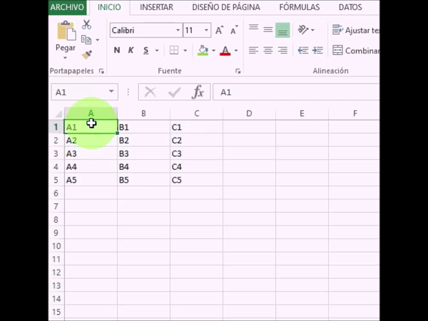
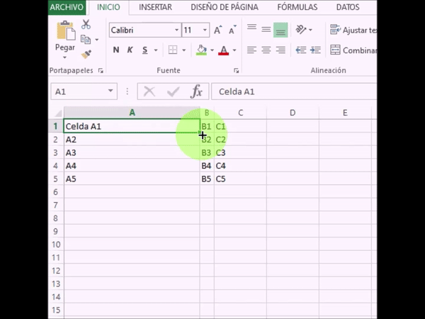
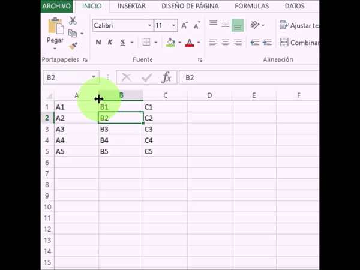
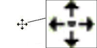
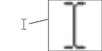
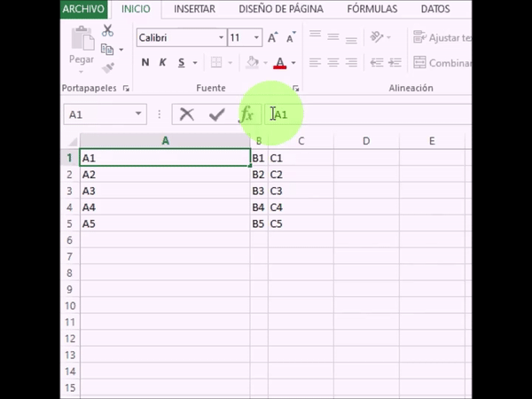
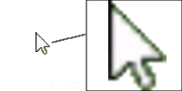
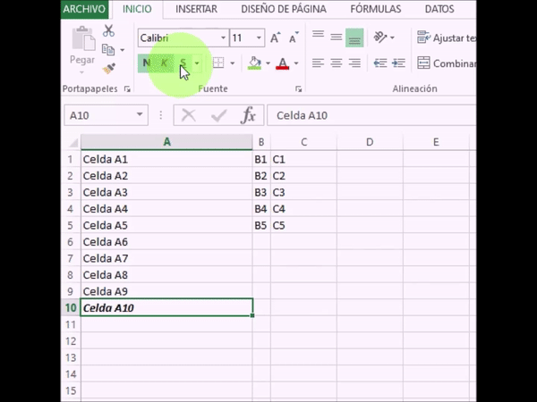
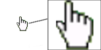
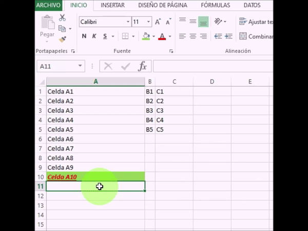

Uso basico del mouses
Cursor en forma de cruz blanca gruesa

Se utiliza para seleccionar celdas o conjuntos de celdas según si realizamos un único clic (selecciona una celda) o si mantenemos pulsado el botón del mouse y lo desplazamos arrastrando (selecciona todo el rango de celdas por el que desplazamos el ratón).
Cursor de flecha gruesa horizontal y vertical

Permite seleccionar filas o columnas completas, el cursor con forma de flecha gruesa vertical sirve para seleccionar columnas completas y horizontal filas completas. Seleccionamos una única columna con un clic y varias columnas si lo mantenemos pulsado y arrastramos.
Cursor en forma de cruz negra fina

Al situarnos en el borde inferior derecho de una celda seleccionada, donde aparece un pequeño cuadrado, el cursor se transforma en una cruz negra que, si mantenemos pulsada y arrastramos, extiende la información contenida en la celda hacia aquellas otras a las que la hayamos arrastrado.
Cursor para ampliar columna o fila.

Al situarnos justo en el extremo de la cabecera de una columna o fila aparece el cursor para ampliar columna o fila que nos permite, si clicamos y arrastramos manteniendo el clic, ajustar el ancho de la columna o el alto de la fila en la que estamos situados.
Cursor en forma de 4 flechas para mover celda
Sirve para desplazar elementos completos de un lugar a otro, este cursor se utiliza para mover y cambiar de lugar celdas completas con su contenido intacto
Cursor de texto
Es el cursor para la introducción de textos, que aparece en todos aquellos puntos en los que sea posible escribir texto: barra de fórmulas, interior de las celdas, cuadros de texto…
Cursor flecha para elegir elementos del menú
Es el cursor habitual en Microsoft Windows, la función principal es la de seleccionar elementos del menú
Cursor en forma de mano para seleccionar hipervínculo
Uno de los iconos o punteros de mouse que menos suelen aparecer pero que también forma parte del arsenal de punteros de Excel es el de seguir un enlace.
